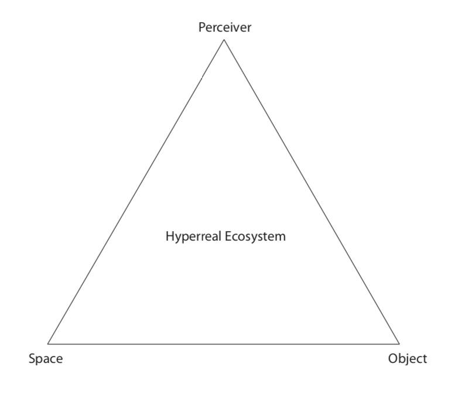
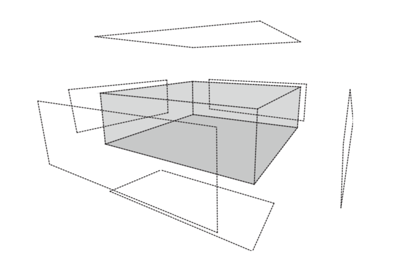
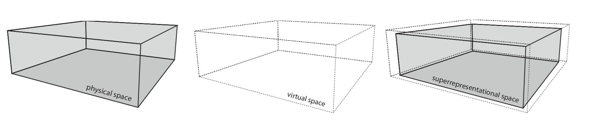
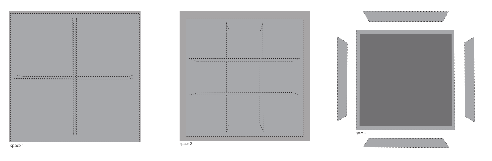
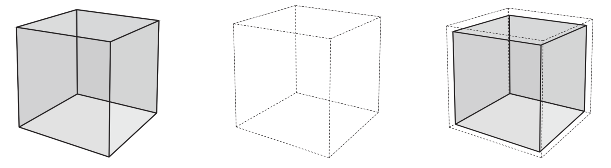
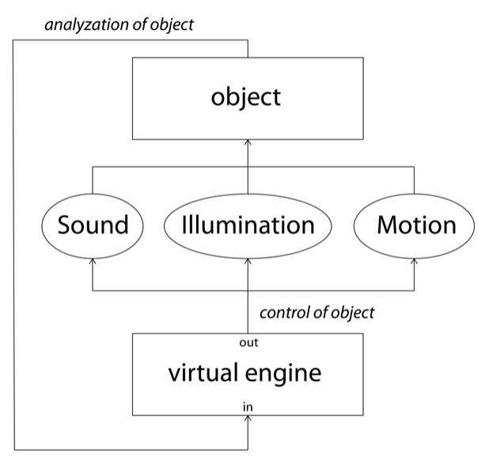
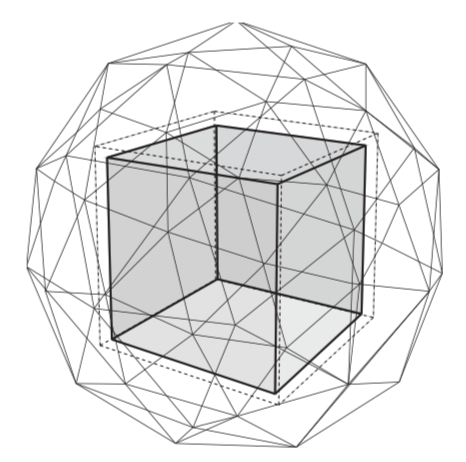
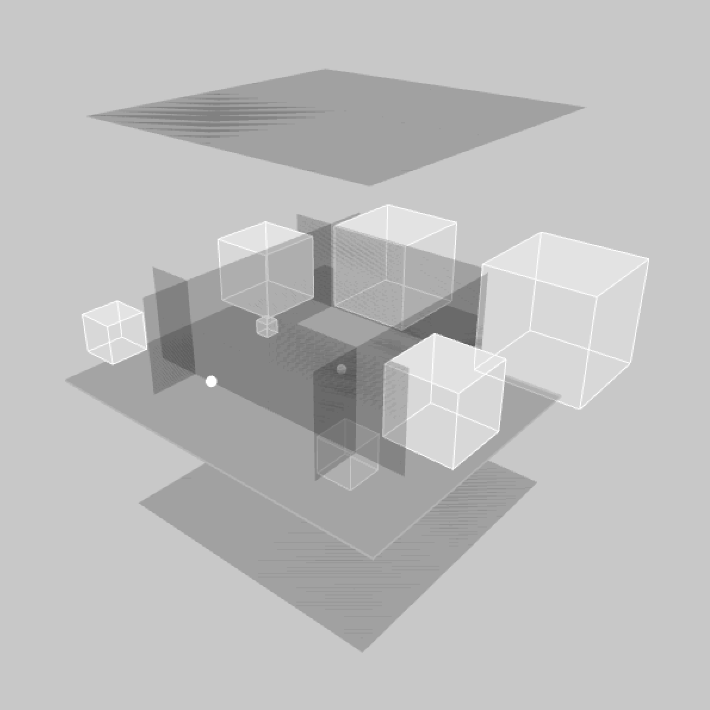

March 2019 | Prof. Dr. Sabine Sanio | Termpaper MA
INTRODUCTION
This paper is mainly focussing on an overarching “meta”-structure that incorporates three important elements: space, object and the user. These three elements are in constant relation with each other, constituting the perception of the environment and the identification of the perceiver. This structure can be seen as a "hyperreal" ecosystem that consists of complex relations that are always in transformation. “Hyperreality” is a term that was defined by French philosopher Jean Baudrillard as “the generation by models of a real real without origin or reality”(1). The conceptualisation of a hyperreal ecosystem is formed through a construction of interplay between “real” and “virtual” consisting of qualities of transcendence. The existing physical properties of space, object and perceiver become virtualized by models established by technological and computational implications. This process of “virtualization” is a model that represents the real, and function as a transparent membrane on top of the physical dimensions. Pierre Levy, French contemporary philosopher, defined virtualization as "the movement of actualisation in reverse. It consists in the transition of the actual to the virtual" and "virtualization is not a derealisation but a change of identity"(2). This transcended environment is a non-linear and continuous space that is fluid and in constant flux, non-existent without virtualization. Through interchangeable relations, constituted by the action and reception of the user (the immaterial memory and the materiality of physiology), a hyperreal ecosystem is constituted through forms of experiential transformation.
The main focus in the first chapter is on space and spatial experience within the concept of the hyperreal ecosystem. In this chapter I want to coin the term “spatial fluidity” or the “fluid space”. This concept is a futurist idea about perceived or experienced space in the contemporary and post- information era. This form of space derives from a research perspective within the intersections of advanced computational technologies, phenomenological perception and psychology. To come closer to the construction of fluid space I want to discuss a few elements and information deriving from repertoire: mentioning work of Michel Asher and Maryanne Amacher, both artists that experimented within the relations between space and perception. Also discussed is the information derived from experiences with spatially experienced constellations in the field of modern technology. Pointing out that these interdimensional spaces and the multisensory perception of fluid spaces are coming into existence through a synthesis of (non-)visual, (non-)sonic and (non-)tactile dimensions constructed by a combination of physical and virtual mechanisms.
After covering the meaning of space and its fluidity, as a component of this overarching meta- structure, I want to shift in the next chapter towards the object. In which objects are manifestations in the field of space that are part of structuring perception and conception. By discussing the non- object, as an object without identity, the object becomes an ornament that gains identity towards the implementation of a virtual layer. This object or character, that bursts out of its physical properties, transcends into a new phenomenon: the trans-physical entity. Describing the encoding and decoding of this entity, through technology and virtualization, gives a more understanding towards the establishment of this hyperreal object. Furthermore I explain the ideas of sonic sphere, illumination and kineticism, as techniques to construct this illusional form of identity towards the phenomenon of the trans-physical entity.
The last chapter and final element of the triad around the conception of the hyperreal ecosystem is the user. Discussing the construction of experience and how our view on the existing “real” is shaped is important to understand the perceivers role in this fluid environment. Discussing memorial and physiological aspects of how we receive objects and space but also how we give an action back to construct this experience. Furthermore I want to explain how a feedback-loop is constructed through the implementation of advanced technologies, to consolidate the tree elements of the triad of the hyperreal ecosystem.
Part 1: Fluid Space
An important note before going into a more elaborate understanding of the structure of “fluid space” is to emphasise that this concept is transcended from its physical dimensions and is not a space that contains the quality of tangibility. You could say that this representational space is rather a perceptual space or psychological space that is more fundamental within the mind. According French Philosopher Henri Lefebvre, the relation of physical and mental space are indivisibly linked, and the conceived space, the mind, “envelopes the physical dimensions”(3). However this perspective of Lefebvre is more related to social structures, this interesting connection between mental- and physical space become unconsciously submerged and has the possibility to alter the perception of the fluid space.
Realised by new emerging technological systems with high processing powers, fluid space can be considered as an experiential construction that is able to shift and transform its meaning continuously. You could ascertain that without this technological environment the fluid space is non-existent, identity-less and without function. Having the same sensual qualities and physiological freedom as a physical space, the static dimensional property of the physical space is eliminated and replaced by constant emerging and disappearing perceived spatial dimensions. Important to understand is that every perceptual dimension (visual, sonic and tactility) in fluid space is transformable and could transform into a continuum, always unknown.
The Dissolution of the Visual and Achievement of Spatial Continuum
A crucial modification of the physical space that creates the ability to obtain new perceptual spaces or fluid spaces, lays in the visual domain. As vision is the primary sense that determines the dimensions of space, this particular sensual quality has to be restored. By eliminating all visual cues of the physical space, for instance by means of de-illumination or smoke, spatial continuum can be achieved and existing dimensions become blurred. A visual spatial continuum has a big affection on the quality of the perceptual reception of space, and accentuates the use of other senses, hearing and touching, but also towards the mind, the evocation of more subjective responses.
Michel Asher, conceptual artist who was active in installation art practices, is known about his focus on spatial reconstruction and the elimination of the object. In his work he experimented with sensory and psychological qualities of human perception. By controlling the sensory space on an acoustic and visual level, Asher repositioned the space and amplified the perceptual spectrum. By using acoustically highly absorbent or reflective walls, and visually treating the walls in very similar ways, he aimed for elimination of any objective forms of perception. “Tactile and auditory elements joined visual stimuli in calling multisensory modes of response, and the purposeful minimization of sensory elements caused beholders to become even painfully aware of their own modes of sensory reception”(4). By creating a merely static architectural construction Asher achieved this sonic and visual reduction and paradoxically amplified the perceptual spectrum.
The idea of fluid space, similarly to the work of Asher, takes place in a static physical construction, except that the perceptual existence of the physical space is completely eliminated. Due this elimination, an unknown infinite space emerges open for new perceptual constructions. Parallel to Asher’s work is the amplification of the sensory spectrum, tactile and auditory senses become more prominent in this perceptual void. Amplifying the quality of these senses, awareness arises of new fluid and transformable environments. One way to achieve these fluid spaces is through sonic properties, which I believe can manifest itself in more tactile ways. Using advanced computational technology, sound functions a material that can build new perceptual dimensions of space. If sound is something physical, why we can’t construct walls with it?
Materiality of Sound and Sonic Architecture
What we all should understand before going into architectural manifestations of sound, is that sound has both material and immaterial qualities. Material in the sense of physical properties, for instance its temporality, the vibration of air, how it enters the ears and is perceived by the brain. But also more immaterial properties, which aims on more evocations of emotion, spirituality and perception. This both material and immaterial becomes a constellation that is able to emerge perceptional dimensions of space. By concluding that I want to formulate a hypothesis that the perceived space can be constructed by sound.
Experimenting with the boundaries of physical dimensions of sound and space is sound-artist Maryanne Amacher. Amacher worked with the physical conditions of space that embodied sonic material, emitted through loudspeakers. The so called structure-borne sound transported energy fields that gave meaning to her shaped "sound worlds” and “sound-characters”. By placing the speakers in certain positions, she created physiological experiences and accentuated the materialistic properties sound has through its interplay with the physical surrounding. Seeing sound as a physical, intensive force that has the ability to create new sonic worlds is essential to understand the construction of fluid space.
To have the ability to transform and shift the perception of space through sound, I want to introduce a dynamic medium of sonic emissions. Spatial sound, a medium that exists at the crossover of space and sound, breaks the idea of stereo-image and creates the possibility to create omnidirectional sound environments. In this emerging field of audio-technology whereas the perception of sound is a three-dimensional experience, there is a necessity that speakers are placed in a way the sound is perceived in every audible dimensional plane. These fast developing and emergent multi-speaker configurations, containing high-end spatial resolution and visual interfaces, have the computational possibility to construct sonic architecture. Through sound- spatialization techniques (e.g. Ambisonics) sound is not anymore important as something that emits out of speakers, but about spatial positioning (the space in-between the speakers). Seeing sound as a virtual object or plane existing in a virtualised space, each with its own shape and dimension, creates the possibility to place audible walls and shapes in physical space. And therefore hypothetically answers the questions that sound has a literal possibility of constructing new perceivable spaces.
Virtualization of Space and Composition
After introducing the possibility of sonic architecture and the approach on the construction of fluid space is to emphasise that fluid space is only achieved by an interplay between “real” and “virtual” space. Where the “real” or physical space is dissolute from all its visual qualities and additionally contains a multispeaker configuration that covers at least all existing physical dimensions. The “virtual” space is a computational and mathematical construction that functions as an engine that constitutes the “real” with a new perceptual space.
These two kind of spaces, in constant mutual feedback, are two layers on top of each other and consolidated as one perceived space. Through computational and mathematical structures, between hardware and software, the physical space or representational space, get transcended into a superrepresentational space: the fluid space. This interrelation between physical and virtual space is a construction that is not being perceived. As philosopher Gottfried Leibniz said that music “consists only in the harmonies of numbers and in calculation that we are not aware of, but which the soul nevertheless carries out.”(5) I think we can project this statement also on the fluid space since this hidden mathematical construction consists of individuated and mental receptions.
Since fluid space is a dimensional space that is in flux and is able to change constantly, space becomes a field that can have more metaphorical and symbolic functions. Through advanced technology and embedded virtual and physical constructions the computational powers allows to create an infinite variety of perceivable spaces. The constitution of these spaces can be interpreted and executed in a variety of abstract and dramaturgical ways (spatial division, multiplication, extraction, modulation etcetera). These spatial abstractions will create new perceivable spaces that are able to reflect back into more semantical and personal connections.
Part 2: Trans-Physical Entities
The identification of an environment is constructed through the relation between the perceiver and the existing objects in space. The objects are ornaments that identify the space as well as its user. If space has a fluidity and is interchangeable, the fluidity of objects could function as contextualisations of space. Where hard- and software structures, as explained before, create new perceptions and meaning of perceptual spaces, through sonic architecture and virtualization, these “hyperreal” constructions can also function to create new meaning of objects. Through virtualization, the object’s physical properties that shapes character and identity (for instance through motion, illumination and sound) becomes interchangeable and transforms through systems of relations. These relations between objects, space and perceiver constructs the identity of the environment and because of fluidity is non-linear and interchangeable.
As a static object, without any control of virtual mechanisms, the object is identity-less: a non- object. Although it has its physical dimensions, there is no relation with its environment and perceiver. Through virtualization and the implementation of behaviours the object gains meaning within its spatial context. In this way the objects become entities with their own character and behaviour, through execute control by virtual interfaces. These interfaces are giving more fluid behaviours towards the properties (visual, tactile and sonic) of the physical object. Through this act of modification the original physical dimensions become transcended. In this way, characterisation of the object becomes a form of composition, with aims towards its own intelligence and decisions. These characters become autonomous beings that are interacting with spatial transitions and events.
The Illusion of Entity and the Virtualization of the Object
If objects has the same perceptual and transformable constellations as spaces, the transformation of the objects’ qualities should be happening within all its existing audible, visual and tactile properties. These perceptual properties should have clear relations to each other to function as one: an entity. For instance, when a glass falls, hits the ground, and breaks down in pieces there are a few sensory happenings: you see and hear the glass breaking. If you would not hear any sound at the moment the glass breaks, you would be disoriented and question its reality. To make the perceptual qualities of the object interrelatable, so each perceptional layer can’t function without the other, entity appears. To make these connections appear logical to each other, objective questions are prevented and the focus is more on an experiential level.
Using computational tools as an illusive glue to consolidate these perceptual properties creates the possibility to shift and transform the meaning of the object. Virtualizing the "real" object into a "virtual" object creates the computational possibility to virtually implement behaviours and feed it back to its physical properties. You can see these two kinds of objects, “physical” and “virtual” as a consolidated object, a “hyperreal” object. The virtual becomes a transparent layer or membrane on top of the physical object and consolidates all existing properties. These properties, controlled through a collaboration of physical and virtual mechanisms, are represented in sonic spheres, motion and illumination.
With the development of micro-controllers and sensor technology the properties of the object can become completely controlled and analysed. The micro-controller functions as an interface that makes the “physical” and “virtual” dimensions communicate with each other. By using these controllers’ inputs for analysing and gaining sensory data of the object (e.g. orientation, loudness sound, speed movements, brightness of light) and the outputs for controlling the physical properties (e.g. speed and direction of motors, amount of light) a data-structure of giving and taking appears. Connecting these parameters to each other creates a constant feedback between virtual and physical dimensions and makes these dimensions inseparable.
Sonic Spheres and Material Elimination
I want to discuss a contemporary phenomena in modern technology that I find meaningful to describe and introduce the relation of sound versus object within the idea of the ‘Trans-Physical Entity’. In the vehicle-industry the electric car is growing due reduced gas emissions and fast rising oil prices. These cars are eliminated from the gas-engine and are now driven by re-chargeable batteries. Because the physical engine plays no role anymore and is replaced by electrical components, there is almost no sound produced by the vehicle (at least not the car sound we know). For this reason, car companies are hiring sound and system-designers to create physically modelled synthese of car-sounds and implement it in the electrical cars for safety reasons and comfort. These variable models are constantly in feedback with the behaviour and choices of the driver and creates the illusion of an engine through emitted sound by hidden loudspeakers. This concept of sound that becomes an instrument to create an illusion of physical properties, due eliminating its materiality and feed it back to the behaviours of the object, is the core of the sonic dimension of the trans-physical entity.
Compared to the sonic construction of fluid space, which can be seen as “global” sound (the environment), the sound of the object can be described as “local” sound (the entity). Because of the virtualization of space, the entity becomes represented in both physical and virtual space. Through locating sound object’s in space, with the use of omnidirectional sound environments and Ambisonics techniques, there is a possibility to create a sphere of sound around the existing physical object. In this way you can use sound to transcend the physical properties of the object. Creating feedback mechanisms between these sonic characteristics and other perceptual parameters, for instance light or movement, creates the illusion of entity.
Ventriloquism and Illumination
To create this illusion, connections should be made very clear. For example the effect of Ventriloquism. In this phenomena there is a person that changes his or her voice so that it appears the voice is coming from elsewhere, usually a doll with a simultaneous changing mouth-structure. This illusion makes the doll and the voice inseparable, although these are two different sources. The characterisation of the trans-physical object through a sonic sphere (the voice) should have an immediate feedback within the visual context to create this illusion. Illumination is a way to fill up the visual gap. Because this visual dimension can be part of the virtual structures of feedback, the fluidity of the object can be enriched. Light can be a metaphor of life to its object and define its existence in the space, when there is sound, there is light. In this way the voice of the character illuminates and shifts the attention towards the object.
Kineticism and Behaviour
In the physical domain of trans-physical objects motion and behaviour plays a big role. As soon as objects start to move a certain character or personalisation starts to appear towards the kinaesthetic responses of the perceiver. By having control on the kinetic aspect of the object, for instance through fast unexpected irregular movements, or slow constant and fluid movements, an indeterminate character appears. Robert Morris defines in his writings that the idea that “the indeterminacy of the object is a literal aspect of the physical existence of the thing"(6). By virtualising the movements of the object according the happenings in the space, through voltage controlled motors and mechanisms, the object forms representations of the spatial context.
The consolidated construction of sonic spheres, illumination and kineticism gives the control on the characterisation of the trans-physical entity. This transcended physical form has the possibility to merge into a system of relations between perceiver and fluid space.
Part 3: The User as Multi-Dimensional Entity
Starting from the existing space and the elimination of its physical dimensions gives you an empty field to construct new complex structures of perception and thought. The trans-physical objects, placed in the space as characters, constantly shifting and transforming, builds up relations with the environment and forces a reflection generated by its user. The coexistence between space, object and perceiver becomes an environmental construction that is dynamic and is based on a non- linear structure with a certain sensitivity to actions happening in the space. Seeing the perceiver as an entity him or herself, with the same constellation of perceptual multi-dimensionality as the trans- physical object, adds a perceptual complexity and participatory aspect towards the structure of the hyperreal ecosystem. The shifts and transformations of space and object are not only received by the user, but there is a collaboration and interaction between the three elements.
The Construction of Experience through Action and Reception
Since spaces and objects are all constitutions of representations executed by the mind, you could say a space without a perceiver doesn’t exist. With this idea I want to propose the fluid space as empty or identity-less without any reception. The experience of the fluid space and its trans- physical entities is only possible through an entering body with its own memory. French Philosopher Henri Bergson speaks about a certain imaging of space and object through memory. He says: “It is true that we are here dealing with images photographed upon the object itself and with memories following immediately upon the perception of which they are but the echo. But behind these images, which are identical with the object, there are others, stored in memory, which merely resemble it, and others, finally, which are more or less distantly akin to it. All these go out to meet the perception, and, feeding on its substance, acquire sufficient vigour and life to abide with it in space”(7). Because memory is an individuated phenomenon, the responses of the body towards the construction of experiencing the environment is different with each person.
Next to memory there are also more physiological aspects that constructs the experience. The orientation of the body within the space is a necessity within this aspect, and shapes the perception of its environment. Artist Robert Morris experimented with the physiological aspect of perception through the repositioning of the perceiver towards the space and placed objects. In his work L-Beams (1965) he placed big geometrical sculptures in the space that added new dimensions towards the existing architectural environment. While the objects where exactly same in size, although placed in different ways, they were perceived as different in size by the repositioning of the body. In this work Morris challenged the conditions of perception of objects in comparison with its physiological position in space. However the objects were static there is a change in identity happening. If we place this idea of repositioning in fluid space among trans- physical objects, repositioning will have an impact on its fluid behaviours.
Virtualization of the User
The fluid space is a cognitive space that is not only constructed by the reception of the user. Its transformations are also enhanced by the action of the perceiver, as an entity themselves. The act, decisions and position, should be recognised by the virtual engine and connects changes and choices with the conditions of the space and object. Using technology as a glue to construct entity, it also has the possibility to virtualise the act of the perceiver with its environment. Retrieving data from the person’s position in space (through tracking mechanisms) and cognitive responses (brain activity) can create feedback loops with the transformations and shifts between space and objects.The inseparability of the virtualized structures between the participant’s action and its environment creates an unique individuated reflection into the quality of the objects and space, the space within ourselves.
"The question is applicable not only to an empiricist psychology which treats the perception of space as the reception, within ourselves, of a real space, and the phenomenal orientation of objects as reflecting their orientation in the world"(8). Maurice Merleau-Ponty, Phenomenology of Perception
Conclusion
This paper was an attempt towards the explanation and conceptualisation of the hyperreal ecosystem and how this overarching concept or "meta"-structure is constituted. By an interplay between space, object and user and the consolidation through advanced technologies this fluid environment opens up the possibility to explore new perceived spaces. Where the "virtual" becomes a transparent membrane around the "real" and creates new identities around space and object. Because of the fluidity and interconnection between the user, the space becomes a non- linear and infinite environment. As a parallel to the Heterotopia of Michel Foucault, as a concept of "other spaces"(9), a Heterotopia exists through temporal and cultural phenomena. Although the fluid space and the Heterotopia are both heterogeneous spaces, places that are always changing, because of continuity and temporal flexibility, fluid space has the possibility to function without being bounded to time and place. As a space without any identity if not used, the identity of the space and its objects are formed through the action and reception by its user. By the intelligent qualities and possibilities fluid space and its trans-physical entities have, the boundaries of its properties can be explored and experienced. Through abstractions of the three elements and the creation of a symbolic and metaphorical reception.
Bibliography
(1)
Baudrillard, Jean. “Simulacra and Simulation’, trans. Sheila Faria Glaser (Ann Arbor: The University of Michigan Press, 1981)
(2)
Lévy, Pierre. “Becoming Virtual, Reality in the Digital Age", trans. Robert Bononno (New York: Plenum Trade, 1998)
(3)
Lefebvre, Henri. “The Production of Space”, trans. Donald Nicholson-Smith (Oxford: Blackwell, 1991)
(4)
Peltomäki, Kirsi. "Situation Aesthetics: The Work of Michael Asher", (London: MIT Press, 2010)
(5)
Leibniz, Gottfried Wilhelm. "Philosophical Essays", trans. Roger Ariew and Daniel Garber (Indianapolis: Hackett Publishing Company, 1989)
(6)
Morris, Robbert. "Continuous Project Altered Daily", (London: MIT Press, 1995)
(7)
Bergson, Henri. "Matter and Memory", trans. Nancy Margaret Paul and W. Scott Palmer (New York: Humanities Press, 1911)
(8)
Merleau-Ponty, Maurice. "Phenomenology of Perception", trans. Colin Smith (London: Routledge, 1962)
(9)
Foucault, Michel. “Of Other Spaces, Heterotopias”, in Architecture, Movement, Continiuité 5 (Conférence au Cercle d’études architecturales, 1967)







